Paired RGB-thermal data is crucial for visual-thermal sensor fusion and cross-modality tasks, including
important applications such as multi-modal image alignment and retrieval. However, the scarcity of
synchronized and calibrated RGB-thermal image pairs presents a major obstacle to progress in these
areas. To overcome this challenge, RGB-to-Thermal (RGB-T) image translation has emerged as a promising
solution, enabling the synthesis of thermal images from abundant RGB datasets for training purposes. In
this study, we propose ThermalGen, an adaptive flow-based generative model for RGB-T image translation,
incorporating an RGB image conditioning architecture and a style-disentangled mechanism. To support
large-scale training, we curated eight public satellite-aerial, aerial, and ground RGB-T paired
datasets, and introduced three new large-scale satellite-aerial RGB-T datasets—DJI-day, BosonPlus-day,
and BosonPlus-night—captured across diverse times, sensor types, and geographic regions. Extensive
evaluations across multiple RGB-T benchmarks demonstrate that ThermalGen achieves comparable or superior
translation performance compared to existing GAN-based and diffusion-based methods. To our knowledge,
ThermalGen is the first RGB-T image translation model capable of synthesizing thermal images that
reflect significant variations in viewpoints, sensor characteristics, and environmental conditions.


 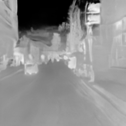
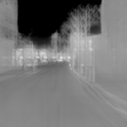
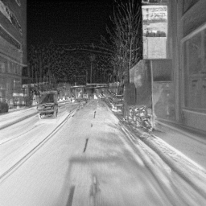
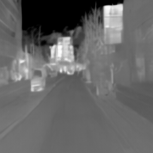
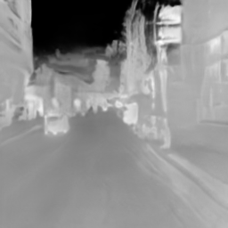
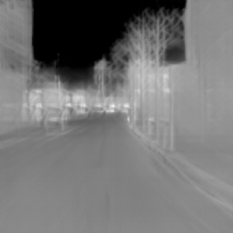
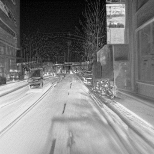
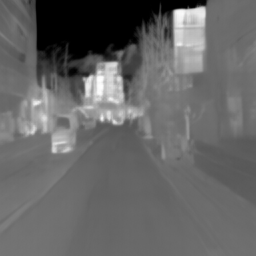

 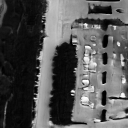
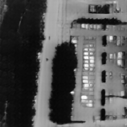
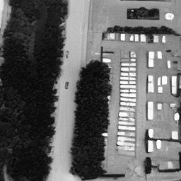
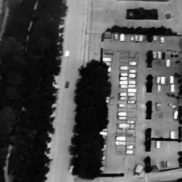
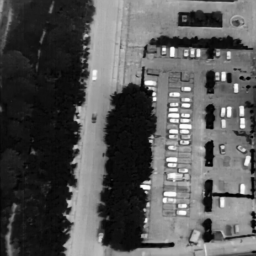
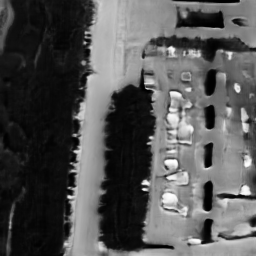
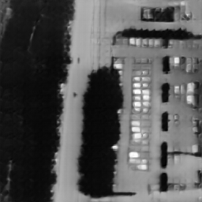
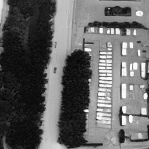
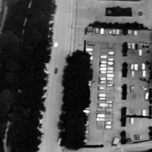
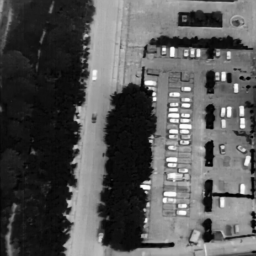
 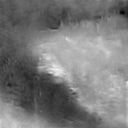
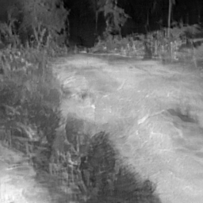
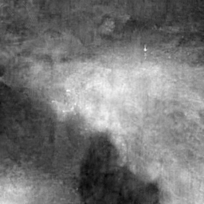
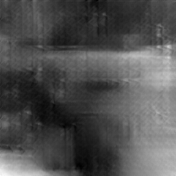
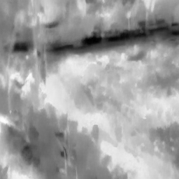
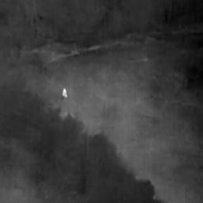
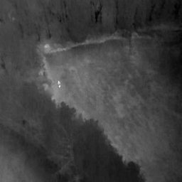
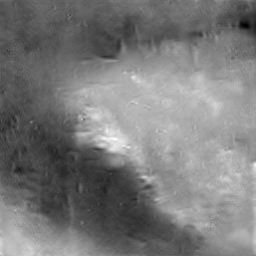
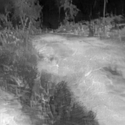
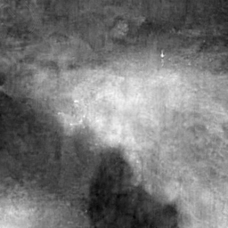
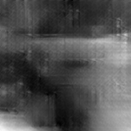
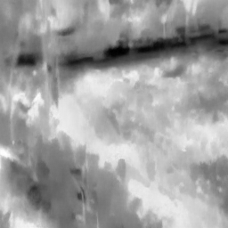
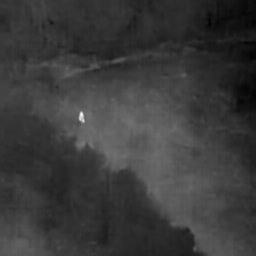
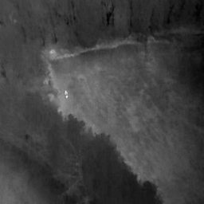